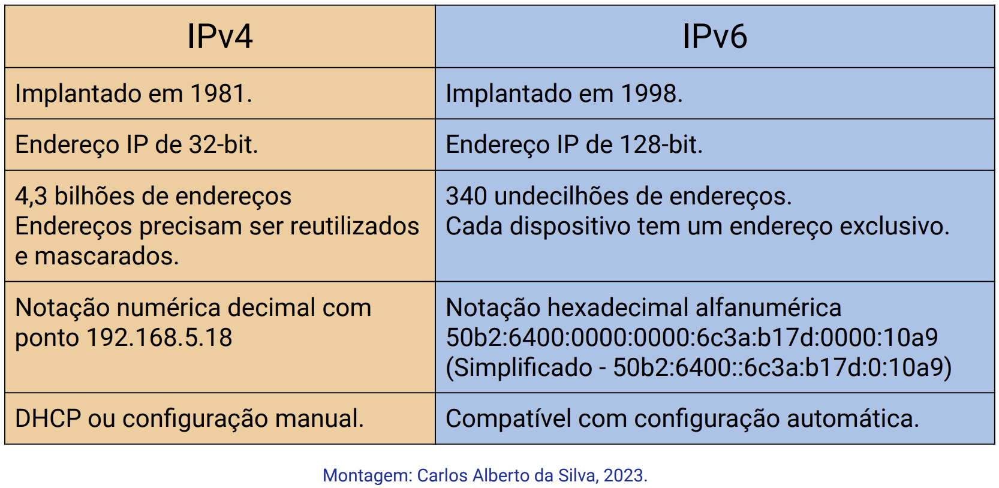
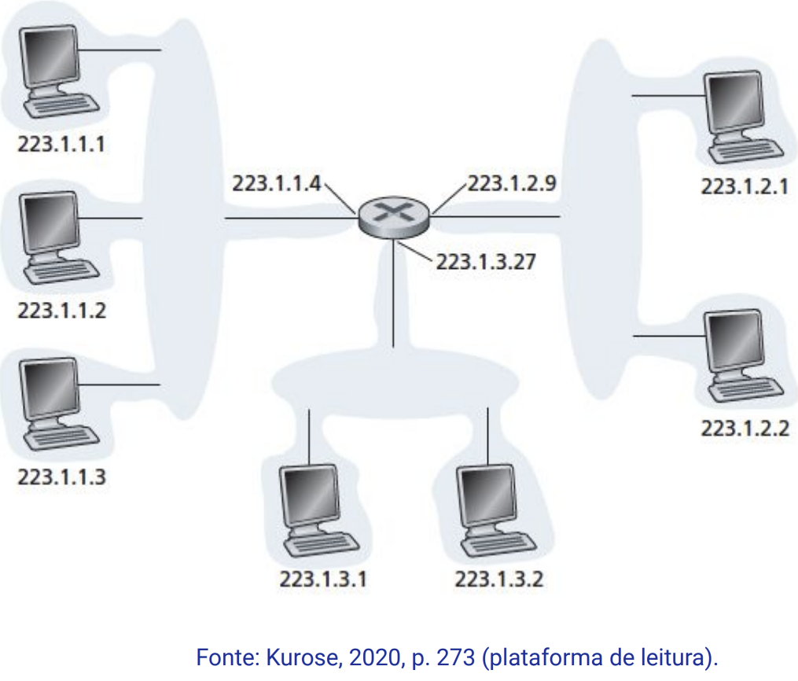
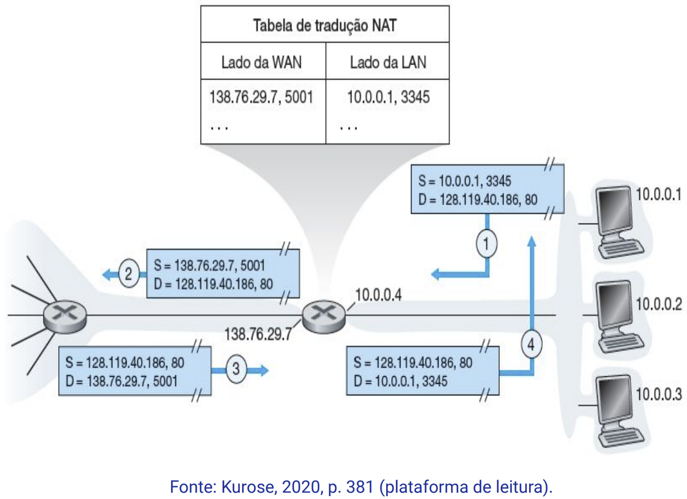

Disciplinas
INFRAESTRUTURA PARA SISTEMAS DE SOFTWARE-T01-2024-2 Concluído
Materiais
Vídeo 1 - [UFMS Digital] Infraestrutura para Sistemas de Software - Módulo 2 - Unidade 2 - Parte 1- Os mecanismos de endereçamento na rede sendProf.° ministrante: Carlos Alberto da Silva
Conteúdo
Os mecanismos de endereçamento na rede
- Endereço físico MAC.
- Endereços lógicos IP:
- IPv4;
- IPv6.
Endereços na redes.
As redes de computadores possuem 2 tipos de endereços:
- Endereço físico MAC: é gravado fisicamente em cada dispositivo (IMUTÁVEL, camada de enlace).
- Endereço lógico IP: endereço ou número IP é atribuído quando conectamos um dispositivo na rede de computadores de forma manual ou automática (MUTÁVEL, camada de rede).
Endereço físico MAC.
Media Access Control (MAC)Este MAC é permanente, registrado no dispositivo (único e IMUTÁVEL).
- um endereço MAC possui 12 caracteres.
- Encaminha quadros nas redes internas (intranet).
Exemplo: E0-06-E0-FD-EC-27
- o número E0-06-E0 é o número do fabricante, conhecido como Organizationally Unique Identifier (OUI).
- E os três últimos pares identificam o número de série do próprio dispositivo deste fabricante, no caso FD-EC-27.
- O uso do MAC address permite identificar os dispositivos da rede interna, justamente por ser estático, mesmo quando o endereço IP não é conhecido.
- O que funciona para detectar a localização de um equipamento específico na camada de enlace.
- O quadro da camada de enlace registra o endereço MAC de origem (source) e de destino (destination) para encaminhar os frames.
Endereços lógicos IP.
Endereço lógica para os dispositivos na rede Endereço lógico IPv4.
Endereçamento lógico IPv4- Definido no padrão RFC 1918.
- Protocolo de Internet versão 4 ou IPv4:
- utiliza de 32 bits;
- em grupos de 4 octetos de 0 a 255;
- no formato 4.4.4.4.
Permite a identificação e encaminhar pacotes nas redes internas (intranet) e externas (internet).
IPv4, padrão RFC 1918Endereço IP + Mascara
- IPv4: tem quatro partes, de 8 bits, variando de 0 até 255 e separados por pontos.
- Exemplo: 192.168.0.95, 192.168.0.107 e 192.168.0.33.
- o endereço IP de cada dispositivo deve ser único.
⇒ Ocorre erro: se houver uma tentativa de uso de um número IP por 2 dispositivos na mesma rede.
Segmentos de rede (IPv4)- de 223.1.1.1 até 223.1.1.255
- de 223.1.2.1 até 223.1.2.255
- ……
- de 223.1.255.1 até 223.1.255.255
O número IPv4 é acompanhado de uma máscara que identifica a sub rede, exemplo: 255.255.255.64.
Intervalos de endereços IP privados- Endereço IP privado é um dos endereços IP privados reservados nestes intervalos:
- Classe A: 10.0.0.0 — 10.255.255.255
- Classe B: 172.16.0.0 — 172.31.255.255
- Classe C: 192.168.0.0 — 192.168.255.255
- Endereço IP público: qualquer número não incluído no intervalo de endereços IP privados reservados
- Exemplos: 8.8.8.8, 15.16.14.15, 175.0.1.1, 245.2.40.50
- Os IPs privados são gratuitos.
- Os IPs públicos pagos, e controlados pela Internet Assigned Numbers Authority (IANA).
- Os endereços de IP públicos IP na internet estão escassos.
- o protocolo Internet (IP) tem os seguintes campos no datagrama IPv4:
- o endereço IP da origem;
- o endereço IP do destino;
- o protocolo da camada superior (TCP ou UDP);
- ….
- O NAT faz tradução de endereço de IP privado em endereço de IP público:
- A Internet pode acessar dispositivos da rede interna (intranet).
- Com o NAT, permite que uma grande quantidade de computadores na rede interna da empresa acesse a internet.
- A tradução NAT de [endereço IP + ports] do TCP/IP permite identificar as conexões com segurança.
- O NAT pode fazer o mapeamento entre:
- IP local + porta local ⇔ IP global + porta mapeada
O protocolo SNAT (Source NAT) permite a conexão e tradução de pacotes de dispositivos internos da intranet com os dispositivos externos internet.
O protocolo DNAT (Destination NAT) permite a conexão e tradução de pacotes de dispositivos externos da internet com os dispositivos internos da intranet.
Endereço lógico IPv6
Protocolo de Internet versão 6 ou IPv6- Foi apresentado pela primeira vez no final dos anos 1990 como substituto ao IPv4:
- devido aos acessos à internet, necessitou-se de mais endereços lógicos.
- Utiliza 128 bits.
- Em 16 octetos de 8 bits.
- Apresentados em forma hexadecimal de 0-9 + A-F :
- Exemplo: FA80:43440:0000:0000:0202.B3EF.FE1E.8329
- Usando endereços lógicos de 128-bit
- que permite, teoricamente, endereçar:
- 340.282.366.920.938.463.463.374.607.431.768.211.456 ou 340 undecilhão de endereços.
- existem métodos para abreviar essa notação.
- O protocolo Internet (IP) tem o datagrama IPv6 com os seguintes campos:
- O endereço IP da origem;
- O endereço IP do destino;
- Limite de saltos;
- ….
- IPv6 suporta endereçamento multicast
- que permite fluxos de pacote que usam muita largura de banda (como streams multimídia):
- sejam enviados a vários destinos simultaneamente;
- o que reduz largura de banda de rede.
- IPv6 tem um recurso chamado configuração automática, que permite gerar um endereço IPv6 assim que o dispositivo liga e se conecta na rede.
- O dispositivo começa a procurar por um roteador IPv6.
- Se algum estiver presente, o dispositivo pode gerar um endereço local e um endereço roteável globalmente de forma automática.
- IPv6 permite que os dispositivos fiquem conectados a várias redes simultaneamente.
- a recursos de interoperabilidade;
- O protocolo IPv6 está sendo implementado no 2º nível de roteadores:
- por meio de um túnel lógico;
- encapsulando quadros de IPv6 em IPv4.
Referências:
KUROSE, Jim; ROSS, Keith W. Redes de Computadores e a Internet: uma Abordagem Top-down, 8 Edição. Editora Pearson, 2021. ISBN: 9788582605592. p. 265-282. Disponível na Biblioteca Digital da UFMS.
TANENBAUM, Andrew S.; FEAMSTER, Nicholas; WETHERALL, David J.; Redes de Computadores, 6ª Edição. Editora Pearson, 2021. ISBN: 9788582605615. p. 284-306. Disponível na Biblioteca Digital da UFMS.